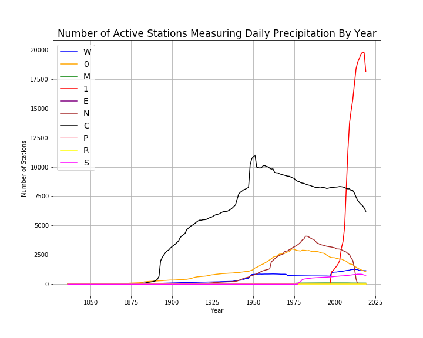

Stations in North America
Number of Active Stations Per Year
The following plots give the number of stations reporting the different types of observations in a given year in North America. This is measuring the number of stations active in a given year and indicates how the size of the archive is changing over time.
| Code | Type |
|---|---|
| 0 | Unspecified |
| 1 | Community Collaborative Rain, Hail,and Snow (CoCoRaHS) |
| C | U.S. Cooperative Network |
| E | European Climate Assessment & Data |
| M | World Meteorological Organization |
| N | Data supplied by a National Meteorological or Hydrological Center |
| R | U.S. Interagency Remote Automatic Weather Station (RAWS) |
| S | U.S. Natural Resources Conservation Service SNOwpack TELemtry (SNOTEL) |
| W | Weather Bureau Army Navy |
Daily Precipitation
Daily Minimum Temperature

Daily Maximum Temperature

Daily Snowfall

Daily Snow Depth

We see a similar pattern for nearly all types of station IDs in North America: for each meteorological element, the number of active station IDs in a given year increases to a peak and then begins to decline. The rate of growth to the peak and the rate of decline varies by type of station and by type of element.
For example, for stations reporting daily precipitation, the number of active stations in the US Cooperative Network peaks in 1951 at 10,999 stations and then declines to 6219 stations in 2019. The CoCoRaHS network of station IDs explodes after 2000 to a peak of 19,798 stations in 2017 and then declines to 18,134 stations in 2019. The National Hydrological station IDs first appear in the archive in 1902, peak in 1983 at 4093 stations and then decline to zero in 2015.
The following table gives the earliest and lastest years for each type of station ID in the archive in addition to the year with the largest number of station IDs that record daily precipitation. Note that none of the stations of type R record daily precipitation.
| Type | First Year | Peak Year | Peak Value | Last Year |
|---|---|---|---|---|
| 0 | 1840 | 1974 | 2998 | 2019 |
| 1 | 1998 | 2017 | 19798 | 2019 |
| C | 1840 | 1951 | 10999 | 2019 |
| E | 1873 | 1966 | 30 | 2018 |
| M | 1938 | 1996 | 103 | 2019 |
| N | 1902 | 1983 | 4093 | 2014 |
| P | 1856 | 1863 | 2 | 1892 |
| S | 1978 | 2014 | 853 | 2019 |
| W | 1836 | 2012 | 1254 | 2019 |
Types of Stations in The Three Most Active Countries
The following bar plot gives the number of stations by type and country for Canada, Mexico, and the United States. The vertical axis uses logarithmic scaling to allow us to see detail in the plot. 99.6% of all stations in North America are in these three countries; 81% of the stations are in the United States, 11.5% are in Canada and 6.9% are in Mexico.

Within these three countries, stations of type M and N are only found in Mexico. In addition, these are the only station types in Mexico. 7901 of the 7902 unspcecified type 0 station IDs in North America are found in Canada and 1 is in the United States. The United States has the most varied types of stations.
Menne, M.J., I. Durre, R.S. Vose, B.E. Gleason, and T.G. Houston, 2012: *An overview of the Global Historical Climatology Network-Daily Database*. Journal of Atmospheric and Oceanic Technology, 29, 897-910, doi:10.1175/JTECH-D-11-00103.1.
Visualizations